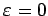
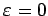
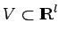

Inhalt Index DeskTop Bronstein

 Dynamische Systeme und Chaos Bifurkationstheorie, Wege zum Chaos Bifurkationen in Morse-Smale-Systemen Lokale Bifurkationen nahe einem periodischen Orbit
Dynamische Systeme und Chaos Bifurkationstheorie, Wege zum Chaos Bifurkationen in Morse-Smale-Systemen Lokale Bifurkationen nahe einem periodischen Orbit


Gegeben sei ein periodischer Orbit  von (17.17) bei  mit den Multiplikatoren . Eine Bifurkation nahe
von (17.17) bei  mit den Multiplikatoren . Eine Bifurkation nahe  ist möglich, wenn bei Änderung von
ist möglich, wenn bei Änderung von  mindestens einer der Multiplikatoren auf den komplexen Einheitskreis trifft. Die Verwendung einer zu
mindestens einer der Multiplikatoren auf den komplexen Einheitskreis trifft. Die Verwendung einer zu  transversalen Fläche führt auf eine parameterabhängige POINCARÉ-Abbildung
transversalen Fläche führt auf eine parameterabhängige POINCARÉ-Abbildung
Dabei sei , wobei und  offene Mengen sind, eine Cr-Abbildung, wobei die Abbildung  mit sogar ein Cr-Diffeomorphismus sei. Es sei weiter P(0,0) = 0 und die JACOBI-Matrix Dx P(0,0) habe s Eigenwerte mit Eigenwerte
mit sogar ein Cr-Diffeomorphismus sei. Es sei weiter P(0,0) = 0 und die JACOBI-Matrix Dx P(0,0) habe s Eigenwerte mit Eigenwerte  mit und k = n-s-m-1 Eigenwerte mit . Dann ist nach dem Satz über die Zentrumsmannigfaltigkeit für Abbildungen (s. Lit. 17.11) nahe topologisch konjugiert zur Abbildung
mit und k = n-s-m-1 Eigenwerte mit . Dann ist nach dem Satz über die Zentrumsmannigfaltigkeit für Abbildungen (s. Lit. 17.11) nahe topologisch konjugiert zur Abbildung
nahe  mit . Dabei ist g eine Cr-differenzierbare Abbildung, die den Bedingungen g(0,0) = 0 und Dxg(0,0) = 0 genügt. Außerdem sind Ac,As bzw. Au Matrizen vom Typ (s,s),(m,m) bzw. (k,k) mit Eigenwerten auf, innerhalb bzw. außerhalb des Einheitskreises.
mit . Dabei ist g eine Cr-differenzierbare Abbildung, die den Bedingungen g(0,0) = 0 und Dxg(0,0) = 0 genügt. Außerdem sind Ac,As bzw. Au Matrizen vom Typ (s,s),(m,m) bzw. (k,k) mit Eigenwerten auf, innerhalb bzw. außerhalb des Einheitskreises.
Aus (17.29) folgt, daß Bifurkationen von (17.28) nahe (0,0) ausschließlich durch die reduzierte Abbildung
auf der lokalen Zentrumsmannigfaltigkeit beschrieben werden.